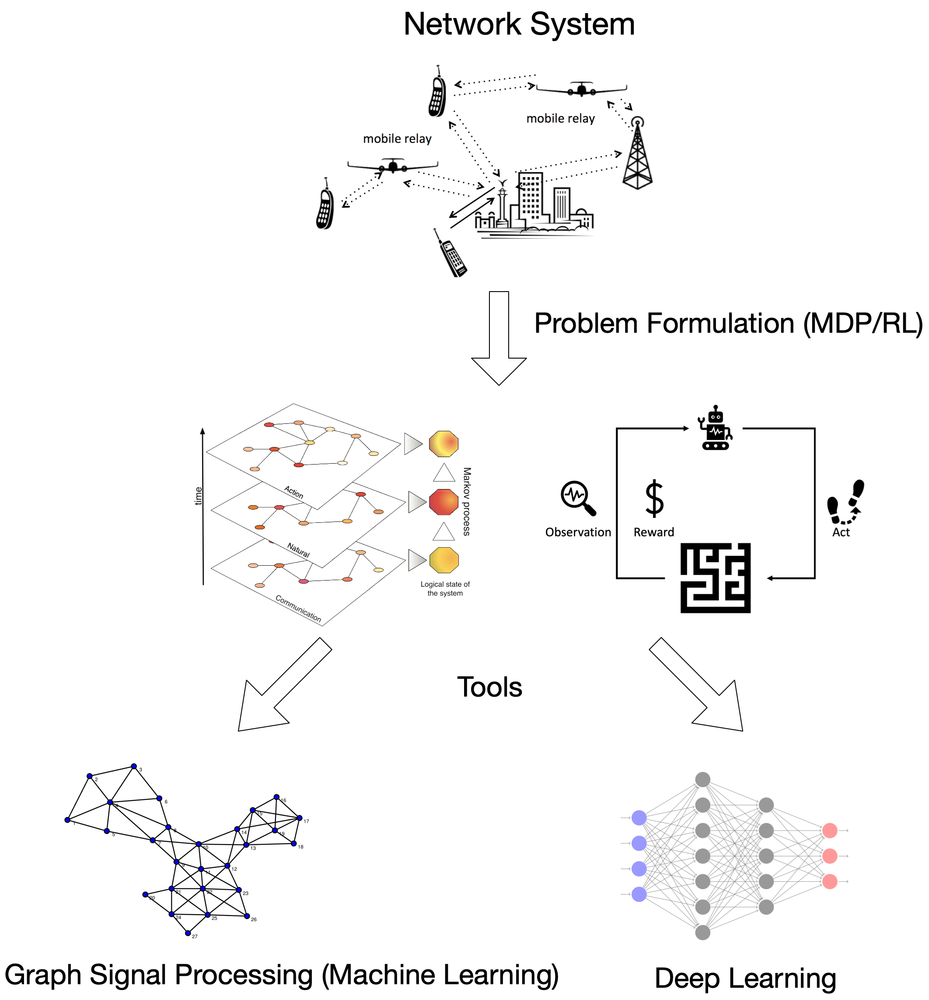

|
Libin Liu
Welcome to my personal website.
I am working on the application of Graph Signal Processing (GSP) theory/Deep Learning (DL) on wireless network control problems that can be modeled as Markov Decision Processes (MDPs) or Reinforcement Learning (RL) problems.
Research Highlight
|
 |
Sequential decision making problem can be well-modeled as a MDP or RL problem, while classical dynamic programming algorithms can be applied to obtain the optimal policy, the value function or optimal policy can be viewed as signals defined on each state with connections to other states (e.g., a Finite State Machine). On the other hand, GSP also provides an efficient representation for data in many domains. The main goal of my research is to seek reduced dimension representation of the value function/optimal policy using tools from GSP to help in efficient algorithm design.
GSP on DL (currently working on)
GSP on RL
GSP on MDPs
|
Contact
libinliu [at] usc [dot] edu
EEB 540, 3740 McClintock Avenue
Los Angeles, CA, 90007
|